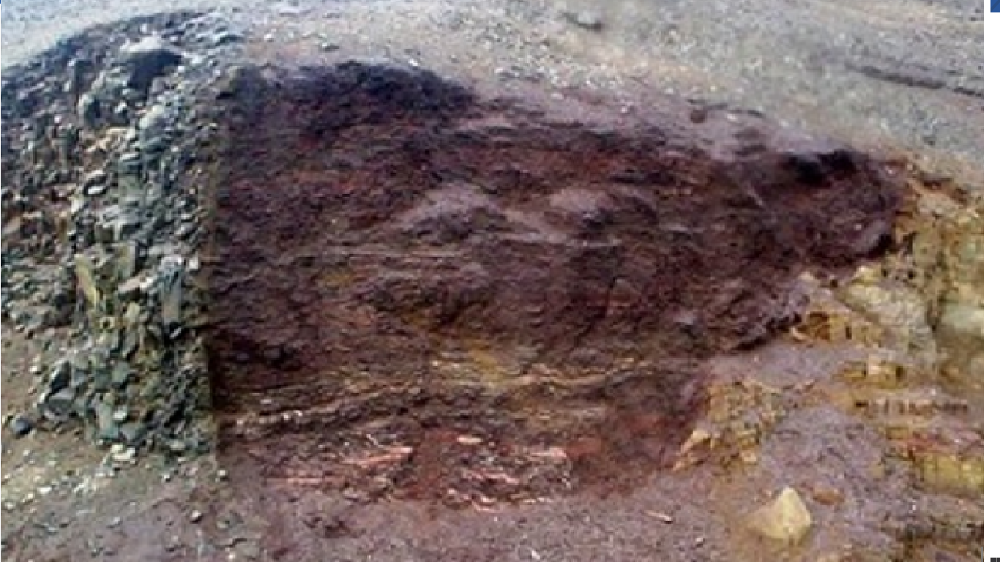
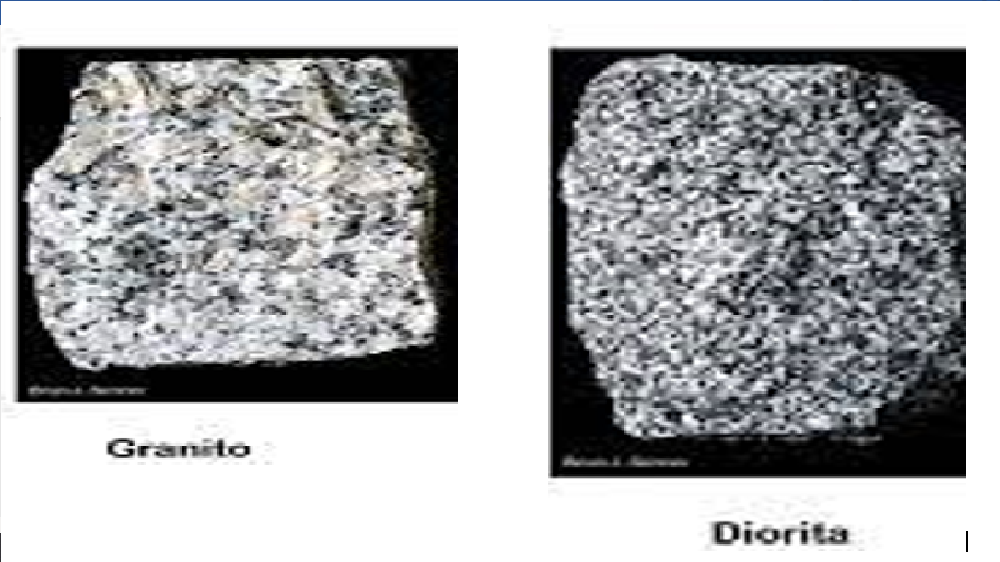
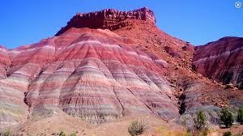
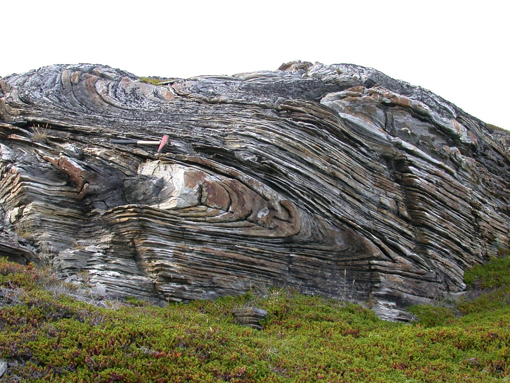
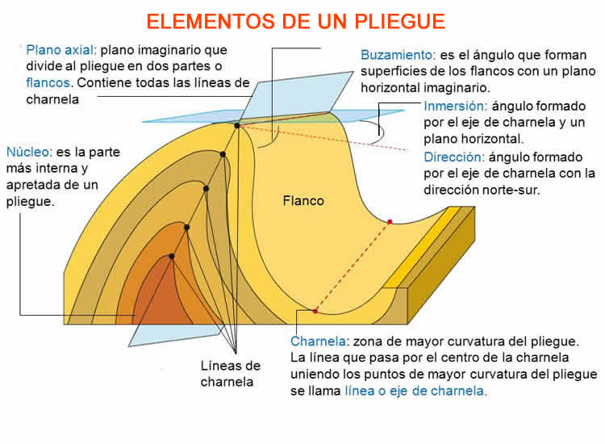
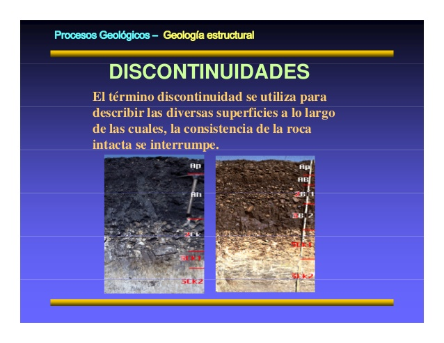

GEOLOGIA
EQUIPO7
5.1.Litología y Estratigrafía
La litología es la parte de la geología que estudia a las rocas, especialmente de su tamaño de grano, del tamaño de las partículas y de sus características físicas y químicas. Incluye también su composición, su textura, tipo de transporte así como su composición mineralógica, distribución espacial y material cementante.
 Importancia
La litología es fundamental para entender cómo es el relieve, ya que dependiendo de la naturaleza de las rocas se comportarán de una manera concreta ante los empujes tectónicos, los agentes de erosión y transporte, y los diferentes climas de la Tierra. Además del comportamiento de las rocas, ante los demás agentes del relieve, hay que tener en cuenta que cuando en una región existe un solo tipo de roca (o este es dominante) puede condicionar el relieve, incluso por encima de otros factores. Se dice, entonces que estamos ante rocas masivas. Un ejemplo típico de este caso es el relieve cárstico, con las rocas calizas. En el paisaje predominan las formas cársticas, aunque también sea un relieve plegado de montaña, o una llanura. Otros ejemplos son los relieves sobre rocas metamórficas y los relieves volcánicos. Es clave destacar la importancia del conocimiento de la geología de un territorio para comprender su estructura y el proceso de su formación o geomorfología, además de capacitarnos para analizar los cambios ocurridos en éste por la acción antrópica y sus posibles efectos. Por otra parte, las características físicas del territorio van a configurar en buena medida el tipo de poblamiento que se desarrollará sobre él.
Clasificación de las rocas
• Rocas Igneas intrusivas: Las rocas Igneas intrusivas son el producto del enfriamiento del Magma, antes de aflorar este a la superficie. Las rocas ígneas forman el 98% del volumen de la corteza terrestre, aunque en superficie son más comunes las rocas sedimentarias y en menor proporción las ígneas y metamórficas. Las rocas ígneas intrusivas poseen generalmente, una microestructura desordenada e isotrópica con uniones muy fuertes entre los cristales, en su estado intacto. Generalmente, son rocas muy duras y densas, y en su estado natural inalterado poseen una resistencia al cortante muy alta, sin embargo, al fracturarse y meteorizarse pueden ser blandas y débiles. El comportamiento de las rocas ígneas sanas o no meteorizadas en los taludes es controlado por su estructura, conformada por las juntas o diaclasas, fallas y zonas de corte, las cuales actúan como superficies de debilidad. Las principales rocas ígneas intrusivas son el Granito, la Diorita, la Dolerita, y el Gabro.
• Rocas Volcánicas o ígneas extrusivas: Las rocas Volcánicas o Piroclásticas también conocidas como rocas Igneas extrusivas son producto de la cristalización de los materiales expulsados por los volcanes. Las propiedades ingenieriles de las rocas volcánicas dependen del grado de solidificación y de acuerdo a ésta presentan una variedad de resistencias y permeabilidades. El principal problema de las rocas volcánicas es su fácil desintegración al secarse y humedecerse y la presencia de arcillas activas como la Montmorillonita como subproducto del proceso de meteorización. Las principales rocas volcánicas son la riolita, la andesita y el basalto y las tobas. La microestructura es muy variada de acuerdo a su proceso de formación.
• Rocas Metamórficas: Son el resultado del Metamorfismo o recristalización de rocas ígneas y sedimentarias. En este proceso las rocas son sometidas a cambios texturales y mineralógicos, en tal forma que sus características originales son alteradas o completamente perdidas. Como consecuencia de esto, las rocas metamórficas exhiben un alto rango de características ingenieriles y comúnmente son muy útiles como materiales de construcción. Las características de comportamiento de los taludes en rocas metamórficas sanas dependen de sus patrones de fracturación y bandeamiento (Microestructura textura y estructura). La foliación y la esquistosidad presente en algunas rocas metamórficas las hacen muy susceptibles a la meteorización (Tabla 5.3). Las rocas metamórficas más comunes son la Cuarcita, el Neiss, el Esquisto, La Serpentinita, la Pizarra, la Filita y el Mármol.
• Rocas Sedimentarias: Las rocas Sedimentarias están formadas por la sedimentación y cementación de partículas de arcilla, arena, grava o cantos (Tabla 5.4). Sus características de estabilidad dependen generalmente, del tamaño de los granos, los planos de estratificación, las fracturas normales a la estratificación y el grado de cementación. Las rocas sedimentarias más comunes son el Conglomerado, Breccia, las Lutitas, Areniscas Limolitas, Calizas, Dolomitas, y Evaporitas.
Estratigrafía
La Estratigrafía es la rama de la Geología que trata del estudio e interpretación, así como de la identificación, descripción y secuencia tanto vertical como horizontal de las rocas estratificadas; también se encarga de la cartografía y correlación de estas unidades de roca, determinando el orden y el momento de los eventos en un tiempo geológico determinado, en la historia de la Tierra.
 El estudio de rocas sedimentarias comprende tres aspectos principales:
• El primero es la Sedimentación, que estudia los procesos por los cuales los sedimentos se forman, transportan y depositan.
• El segundo es la Petrología Sedimentaria, que estudia la roca como tal, su origen, composición, textura y estructura.
• El tercero es la Estratigrafía, que trata de las relaciones totales de las rocas estratificadas, tanto espaciales como temporales y de la historia que registran.
Objetivos. Los objetivos de la estratigrafía son:
• Identificación de materiales
• Delimitación de unidades estratigráficas
• Ordenación de unidades estratigráficas
• Levantamiento de secciones estratigráficas
• Interpretación genética de las unidades
• Correlación y asignación de tiempo
• Análisis de cuencas
La estratigrafía registra en las rocas: formas, composiciones litológicas, propiedades físicas y geoquímicas, sucesiones originarias, relaciones de edad, distribución y contenido de fósiles; todas estas características sirven para reconocer y reconstruir secuencialmente eventos geológicos. La estratigrafía esta instituida en principios muy elementales a partir de los cuales se desarrollaron los Principios Estratigráficos que a continuación se mencionan:
• Horizontalidad Original. Superposición. Continuidad Lateral. Los estratos se depositan horizontales, siendo hasta abajo los más viejos y los de arriba los más jóvenes y se continúan lateralmente sin importar que estén interrumpidos por la erosión. • Relaciones de Corte y de Inclusión. El rasgo que es cortado (deformado, modificado) es más viejo que el rasgo o proceso que lo corta (deforma o modifica). Una roca es más joven que los fragmentos de roca incluidos en ella. • Uniformitarismo/Actualismo. “El presente es la llave del pasado”/ “….los ríos, las rocas, los mares y los continentes han cambiado en todas sus partes; pero las leyes que describen estos cambios y las reglas a las cuales están sujetos, han permanecido invariablemente iguales. • Sucesión Faunística. Los fósiles en los estratos se presentan en determinado orden identificable. • Sucesión de Facies. La sucesión horizontal de facies es la misma que la vertical.
Las rocas sedimentarias han acumulado una enorme cantidad de datos estratigráficos que son observables en superficies expuestas (afloramientos naturales), excavaciones, canteras, minas, perforaciones de pozos, etc., y corresponde al estratígrafo la labor de organizar e integrar este cúmulo de información, de tal suerte que rinda una contribución a las Ciencias de la Tierra. Esta labor necesita seguir tres pasos lógicos:
1. Establecimiento de la sucesión de las rocas sedimentarias para formar la columna estratigráfica en cada área.
2. Subdivisión y diferenciación de la columna en unidades significativas y útiles.
3. Relación de estas unidades y los acontecimientos físicos y biológicos que representan con sus posiciones apropiadas en función de la historia geológica.
5.2 Geología estructural y discontinuidades
La Geología Estructural se dedica al estudio e interpretación de las estructuras generadas en la corteza terrestre producto de movimientos propios de la dinámica terrestre, mayormente entendidos y tratados por la Tectónica de Placas.
Es bastante importante en geología para entender el origen y la formación de yacimientos, entender cómo se formó el actual modelo topográfico de la superficie terrestre; en ingeniería civil es la base de proyectos de construcción (edificaciones, puentes, carreteras, represas, etc.) y como herramienta de prevención para la mitigación y control de riesgos geológicos.
Tipos de esfuerzos
• Compresión. Esfuerzo al que son sometidas las rocas cuando se comprimen por fuerzas dirigidas unas contra otras a lo largo de una misma línea. Cuando los materiales se someten a este tipo de esfuerzos, tienden a acortarse en la dirección del esfuerzo mediante la formación de pliegues o fallas según que su comportamiento sea dúctil o frágil.
• Tensión. Resultado de las fuerzas que actúan a lo largo de la misma línea pero en dirección opuesta. Este tipo de esfuerzo actúa alargando o separando las rocas.
• Cizalla. Esfuerzo en el cual las fuerzas actúan en paralelo pero en direcciones opuestas, lo que da como resultado una deformación por desplazamiento a lo largo de planos poco espaciados.
Niveles estructurales
• Nivel estructural superior. Se localiza desde la superficie del terreno (según la altitud en cada lugar) hasta la cota 0 m, que sirve como referencia, aunque puede llegar a más profundidad. La presión y temperatura no son muy elevadas y las rocas tienen un comportamiento frágil; es el dominio de las fallas.
• Nivel estructural medio. Se sitúa entre la cota 0 m y unos 4.000 m de profundidad. El mecanismo predominante es la flexión debido al comportamiento dúctil de las rocas; son característicos de este nivel los pliegues.
• Nivel estructural inferior. Es el nivel del metamorfismo, y como media se localiza entre los 4.000 m y los 8.000 o 10.000 m de profundidad. En los niveles más superficiales domina el aplanamiento, con el frente superior de esquistosidad. A mayor profundidad predominan estructuras de flujo, con pliegues acompañados siempre de esquistosidad y foliación. Su límite inferior viene marcado por el inicio de la fusión y la presencia del granito de anatexia.
Tipos de deformaciones
• Deformación elástica. Una roca tiene comportamiento cuando, tras cesar el esfuerzo, la roca deformada recupera su forma original. En general, las rocas son poco elásticas en niveles muy superficiales de la corteza terrestre, pero sí pueden serlo cuando se encuentran sometidas a una gran presión litostática y niveles más profundos. Una definición general sería: La capacidad de ciertos materiales de deformarse ante la aplicación de un esfuerzo exterior y volver a sus dimensiones originales pasado dicho esfuerzo.
• Deformación plástica. Cuando la roca sometida a una deformación elástica supera su límite elástico, sufre una deformación plástica, tras la que ya no puede recuperar su forma original. «No hay separación de puntos contiguos del material, como ejemplo -los pliegues-«. Si se supera el límite de plasticidad, las rocas se fracturan y pasan a comportarse como cuerpos frágiles. Definición General: Cuando se somete un material al esfuerzo que los llevan a sobrepasar su límite elástico, ocurre que sus deformaciones se vuelven irreversibles o permanentes.
• Deformación frágil. Existe deformación permanente y también interrupción entre puntos contiguos del material (fallas, diaclasas, cabalgamientos y mantos de corrimiento).
Pliegue
Un pliegue es una estructura secundaria resultado de deformación dúctil heterogénea, la cual se manifiesta como una o varias ondulaciones de sus elementos originales. Partes del pliegue:
• Líneas de cresta.: Las curvas que unen los puntos más elevados de la superficie curvada.
• Línea de valle: Las curvas que unen los puntos más bajos de la superficie curvada.
• Flanco: Cada uno de los lados del pliegue.
• Eje: Lugar de los puntos de curvatura máxima. También se puede definir como la línea que resulta de la intersección entre el pliegue y el plano axial.
• Plano axial: Superficie que contiene los ejes de los pliegues de varios estratos.
• Inmersión: Es el ángulo que forma una línea (o eje del pliegue) con el plano horizontal medido sobre un plano vertical que contenga esa línea. El valor de la inmersión de una línea varía entre 0º y 90º.
Discontinuidades
Una discontinuidad geológica o geofísica es un área de separación detectable metrológicamente dentro de los cuerpos rocosos cercanos a la superficie o en regiones más profundas de la corteza terrestre y el manto. El nombre significa una interrupción dentro de la estructura uniforme (continuo) de una roca u otro sólido y fue acuñado por geofísicos. En las capas más profundas de la tierra, también pueden ocurrir discontinuidades en los fluidos plásticos.
Tipos de discontinuidades
• La discontinuidad de Conrad: Corresponde al límite sub-horizontal en la corteza continental en el cual la velocidad de la onda sísmica aumenta de manera discontinua. Este límite se observa en varias regiones continentales a una profundidad de 15 a 20 km, sin embargo, no se encuentra en las regiones oceánicas
• La discontinuidad de Mohorovičić o "superficie de Moho": normalmente se conoce como Moho, es el límite entre la corteza, tanto oceánica como continental, y el manto. Se define por el cambio significativo en la velocidad de las ondas sismológicas a medida que pasan a través de rocas de distinta densidad.
• La discontinuidad de Gutenberg: Representa el borde inferior de la litosfera y, por lo tanto, el área exterior sólida de la Tierra, que se ha roto en varias placas tectónicas. Debajo de la litosfera está la astenosfera, que consiste en material rocoso más suave y fluido porque se ha derretido parcialmente.
• La discontinuidad de Lehmann: Es el límite entre el núcleo externo líquido y el núcleo interno sólido de la Tierra. Fue descubierto en 1936 por la sismóloga danesa Inge Lehmann al analizar los datos de propagación sísmica y notar una discontinuidad.
• La discontinuidad de Wiechert-Gutenberg: se encuentra entre el manto de silicato del planeta y su núcleo externo de níquel y hierro líquido. Este límite está ubicado en aproximadamente 2891 km (1796 mi) profundidad debajo de la superficie de la Tierra